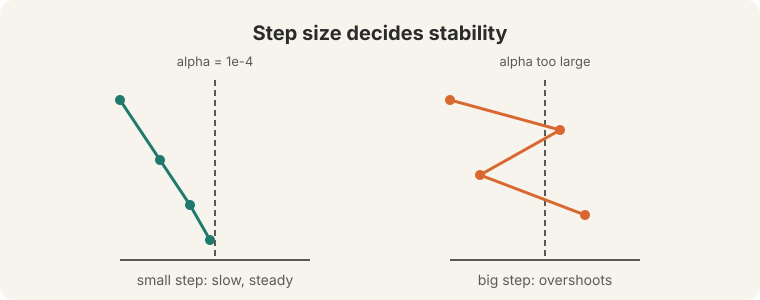
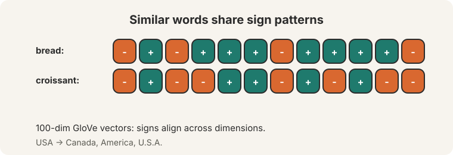
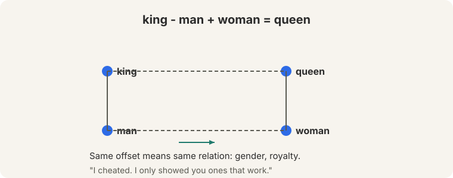
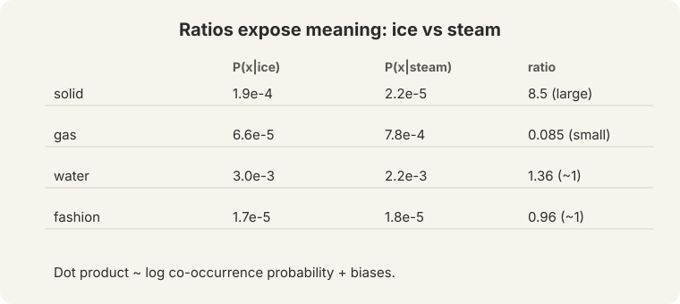
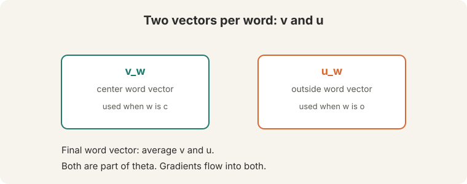
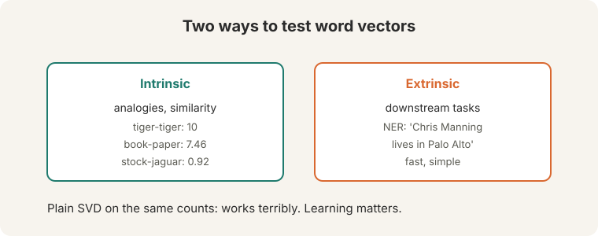
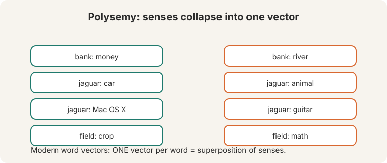
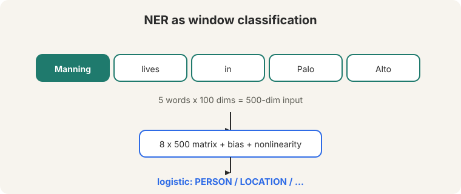

Lecture 2: Word Vectors 2 and Word Senses
Video blocked (ad-blocker or local file mode).
Watch on YouTubeVideo not loading? Watch on YouTube
Original lecture. Christopher Manning continues word vectors: optimization, evaluation, negative sampling, GloVe, senses, and neural classifiers.
How to read this lesson
This lesson has two levels. Level 1 (Core) finishes the word2vec story: how to train, why the vectors work, and how to fix the expensive softmax. Level 2 (Deep) covers evaluation, word senses, and the first neural classifier.
Level 1: Learning rates and initialization
The learning rate alpha sets the step size. Typical values: 1e-3, 1e-4, 1e-5 (04:59 ⏱04:59). A step that is too big overshoots the minimum and the loss diverges.

Initialization matters too. Start with random small numbers. Zeros create false symmetries (08:43 ⏱08:43): every neuron computes the same thing and no learning happens. Randomness breaks the symmetry.
Plain gradient descent uses the whole corpus per step. The lecture is blunt: “we never use” it. SGD with mini-batches of 16 or 32 is the default. The noise in the gradient helps: it jiggles the optimizer out of bad spots.
The step overshoots the minimum. The loss oscillates or diverges instead of decreasing. The lecture gives 1e-3 down to 1e-5 as sane starting values. The noise jiggles parameters out of sharp, poor local minima. A clean gradient descends into the nearest minimum, which may be bad. A noisy gradient explores and often lands in flatter minima that generalize better.
Level 1: The vectors work
Do the trained vectors capture meaning? Yes, in three ways.
Neighbors. GloVe 100-dim vectors (built at Stanford, 12:10 ⏱12:10) show matching sign patterns across dimensions for “bread” and “croissant”. Nearest neighbors of “USA”: Canada, America, U.S.A.

Analogies. Vector arithmetic captures relations: king - man + woman = queen (16:44 ⏱16:44).

Also: Australia:beer :: France:champagne (the audience guessed wine. The answer was “close” with champagne), Russia:vodka, pencil:sketching :: camera:photographing, Obama:Clinton :: Reagan:Nixon, tall:tallest :: long:longest.
The honesty note. “I cheated. I only showed you ones that work.” Analogies are cherry-picked. And “no one uses this stuff anymore”: analogies were a demo of the geometry, not a production technique.
Level 1: Negative sampling
Naive softmax normalizes over the whole vocabulary: 400,000 words times 100- or 300-dimensional dot products per prediction (28:14 ⏱28:14). Too expensive.

Negative sampling reframes training: “train simple logistic regressions.” For each real (center, context) pair, sample k negative pairs from a noise distribution. Train k+1 binary classifiers: is this pair real or noise?
The sigmoid (S-shaped) function turns a score into a probability (30:10 ⏱30:10). A sign-symmetry trick keeps the math consistent without the full vocabulary sum.
Level 1: GloVe counts ratios
GloVe (Jeffrey Pennington, Stanford) starts from co-occurrence counts, not predictions. The key insight: ratios of co-occurrence probabilities expose meaning (43:20 ⏱43:20).

Ice and steam both co-occur with “water” and “fashion” at similar rates. Ratios near 1: noise. But “solid” is much more likely near ice than steam: ratio 8.5. “Gas” flips: 0.085. The ratio isolates the solid-gas dimension of physics.
GloVe fits a log-bilinear model: the dot product of two word vectors approximates the log co-occurrence probability, plus learned biases.
When you want a model that uses global count statistics directly and trains fast on aggregated co-occurrence matrices. Both produce dense vectors with similar geometry. In practice the choice rarely decides downstream results. Word2vec predicts context words online, one window at a time. GloVe regresses on the full co-occurrence matrix. Prediction versus counting. The ratio table shows why counting works: ratios of probabilities carry the semantic signal.
Level 2: Why two vectors, averaged at the end
Lecture 1 gave each word two vectors: v (center) and u (outside). Why keep both? It is a math convenience. If one vector served both roles, the dot product of a word with itself would be a square, which distorts training. The octopus example in the slides shows a word appearing as its own context.

At the end, average the two vectors.
At the end, average the two vectors. One final vector per word.
Level 2: Intrinsic versus extrinsic evaluation

Intrinsic tests probe the vectors directly. Word analogies. Word similarity: human ratings on a 0-10 scale (tiger-tiger: 10, book-paper: 7.46, plane-car: 5.77, stock-phone: 1.62, stock-jaguar: 0.92). Plain SVD on the same counts “works terribly”: learning matters, not just counting.
Extrinsic tests plug the vectors into a real task and measure end-to-end performance. Example: named entity recognition on “Chris Manning lives in Palo Alto”. Extrinsic is slower but honest: it measures what you actually care about.
Extrinsic, for decisions that matter. Intrinsic tests are fast proxies and they can mislead: a vector can ace analogies and still fail on your task. Use intrinsic during development, extrinsic before you ship. Both factorize counts, but GloVe’s log-bilinear objective with biases and a weighted loss emphasizes the informative ratios. Raw SVD treats all counts equally, so frequent-word noise drowns the signal.
Level 2: Word senses and superposition
Words have senses. “Pike” is a weapon (noun), a verb, Australian slang for “chicken out”, and “coming down the pike”. In 2012, researchers trained sense vectors: bank 1 (money), bank 2 (river). Jaguar 1 (car, luxury, convertible), jaguar 2 (Mac OS X 10.3, Microsoft), jaguar 3 (guitar, keyboard, music), jaguar 4 (animal, hunter).
Modern word2vec gives one vector per word. That single vector is a superposition of the senses (57:50 ⏱57:50): all senses mixed together. “Field” (crop, rock, ice, sporting, math) behaves like a probability-density distribution over its senses.

Level 2: The neural classifier
The first neural NLP model in the course: named entity recognition over a word window.

Five words times 100 dimensions = a 500-dim input. An 8x500 matrix plus a bias plus a nonlinearity re-represents the input. A logistic classifier reads the new representation: PERSON, LOCATION, or neither.
Classic classifiers had fixed inputs and a linear decision boundary. The neural version learns the representation and the boundary. The model is linear in the re-represented space.
Cross-entropy H(p, q) measures the cost (72:26 ⏱72:26). With gold labels (one correct class), it reduces to negative log likelihood.
The lecture ends with neurons. A human neuron has one axon and fires spikes. the firing rate is the signal. A logistic unit approximates one neuron. “The magic is the intermediate layers.” More layers, more magic.
Recap: the whole lesson on one screen
Eight ideas carry this lecture. Read each card. Say the core sentence out loud. If you can, you own the lesson.
Start alpha at 1e-3 to 1e-5. Too big overshoots. Initialize with random small numbers. Zeros create false symmetries. SGD with batches of 16 or 32 is the default. The noise helps.
Key: noise is a feature, not a bug
Bread and croissant share sign patterns. USA sits near Canada, America, U.S.A. The geometry encodes semantics as dot products.
Key: neighbors prove the geometry works
king - man + woman = queen. The offsets encode relations. "I cheated. I only showed you ones that work." Nobody uses analogies in production.
Key: parallelogram of relations
400,000 dot products per prediction is too expensive. Train k+1 logistic regressions: one real pair, k negatives. Sigmoid. Done.
Key: cheap binary classifiers replace the full sum
Ice versus steam: solid/steam ratio 8.5, gas ratio 0.085, water and fashion near 1. Dot product approximates log co-occurrence plus biases.
Key: log-bilinear regression on counts
Intrinsic: analogies, similarity ratings. Extrinsic: downstream NER. Plain SVD works terribly. Trust extrinsic before shipping.
Key: stock-jaguar rated 0.92 similarity
2012 trained separate sense vectors. Modern word2vec keeps one vector per word. That vector mixes all senses, like a probability density.
Key: superposition, not separate slots
5 words x 100 dims = 500-dim input. 8x500 matrix, bias, nonlinearity, logistic output. Linear in the learned space. Cross-entropy loss.
Key: magic = intermediate layers
Official sources and further reading
Official: - Lecture 2 video and transcript. - GloVe paper (Pennington, Socher, Manning 2014): the ratio argument and the log-bilinear objective.
Further reading: - Mikolov et al. (2013), “Distributed Representations of Words and Phrases and their Compositionality”: negative sampling. - Reisinger and Mooney (2010) and Huang et al. (2012): multi-prototype sense vectors, the 2012 approach the lecture contrasts with.
Caveats from these sources. Analogy demos are cherry-picked. The lecture says so explicitly. Word vectors were built on word tokens. Lecture 9 shows modern models use subwords. Similarity ratings are human judgments with annotator disagreement.
Connections to the other courses
- CS336: L01 tokenization changed the input from words to subwords. The dense-vector embedding interface survived. L09 scaling laws subsume the “more data” intuition.
- This course: L03 derives backpropagation, which trains the NER classifier. L04 replaces the window classifier with a parser.
- CS229S: matrix factorization theory explains why SVD variants behave differently from GloVe.
Word vectors 2 cheatsheet. LR: 1e-3/1e-4/1e-5. Init: random small, never zeros. SGD: batch 16/32, noise helps. Analogy: king-man+woman=queen, cherry-picked. Negative sampling: 1 real + k negatives, sigmoid, skip full softmax. GloVe: ratios of co-occurrence, dot ~ log prob + biases. Intrinsic: analogies, ratings 0-10. Extrinsic: NER “Chris Manning lives in Palo Alto”. Senses: one vector = superposition. NER: 5x100=500 input, 8x500 matrix, cross-entropy.
Ratio is the signal. Ice/steam ratios isolate physics. Vectors encode it as geometry. Counting is not enough. The objective decides what the counts mean.
Sources
- VIDEOLecture 2 video, Stanford Online YouTube
- NOTESOfficial subtitle transcript
- PAPERMikolov et al., Distributed Representations of Words and Phrases and their Compositionality (2013)
- PAPERPennington, Socher, Manning, GloVe: Global Vectors for Word Representation (2014)
- SUPPLEMENTStanford CS224N course site